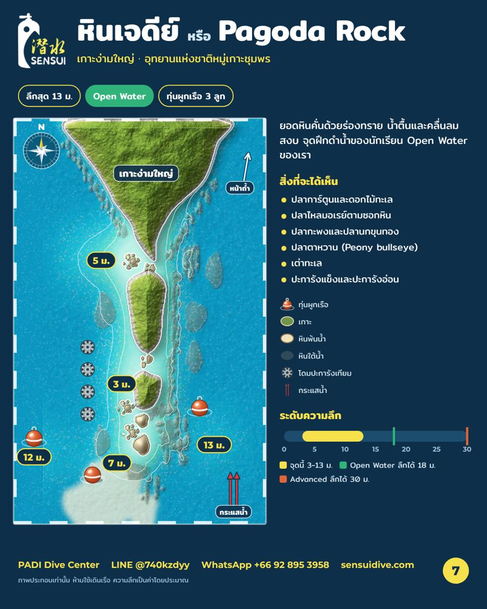

จุดดำน้ำหินเจดีย์ ชุมพร แผนที่และความลึก
ความลึก 3-13 mระดับ: Open Water ขึ้นไป3 ทุ่นผูกเรือ
ยอดหินคั่นด้วยร่องทราย น้ำตื้นและคลื่นลมสงบ จุดฝึกดำน้ำของนักเรียน Open Water ของเรา
สิ่งที่จะได้เห็น
- ปลาการ์ตูนและดอกไม้ทะเล
- ปลาไหลมอเรย์ตามซอกหิน
- ปลากะพงและปลานกขุนทอง
- ปลาตาหวาน (Peony bullseye)
- เต่าทะเล
- ปะการังแข็งและปะการังอ่อน
แผนที่จุดดำน้ำ

ฉลามวาฬที่บันทึกไว้ที่จุดนี้
25 มิ.ย. 2568
จากบันทึกของเรา พบฉลามวาฬช่วงมีนาคมถึงตุลาคม และพบมากที่สุดช่วงสิงหาคม-กันยายน ปี 2568 การพบฉลามวาฬเป็นโชค ไม่ใช่สิ่งที่รับประกันได้
ทักมาจองวันของคุณได้เลย: WhatsApp +66 92 895 3958 · LINE @740kzdyy